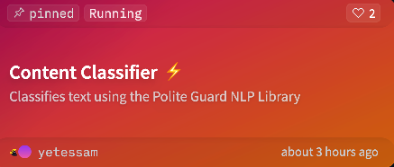
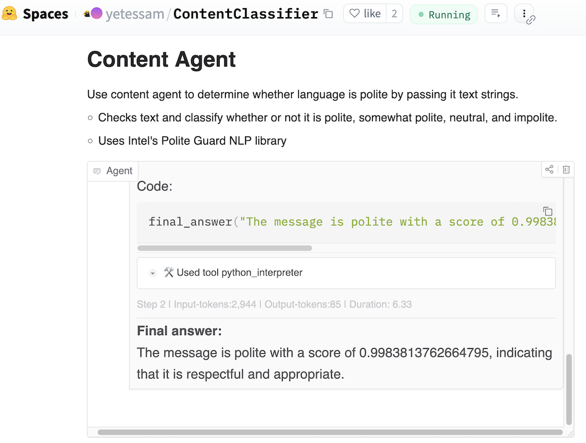

Content Agent
Content Agent can be used to classify input text and determine whether the text is polite.
Intel released an NLP library called Polite Guard that is able to classifiy and score text. Content Agent is going to use its own reasoning with the additional help from Polite Guard to determine whether or not content is polite.

Generative AI is pre-trained to process language and avoid harmful interactions. The content on which the AI is trained is not particularly transparent. One way to provide greater accuracy, accountability, and transparency is to configure an agent to call a specific toolset and connect specific libraries to AI Agents. AI agents can be provided with any number of tools to assist in decision making.
Content Agent was provided with access to the Polite Guard NLP library that classifies text and then was provided with sample functions to teach it how to make the function calls. Additionally, the agent has been instructed to use a structured process of setting up a task, thinking about the problem, running code using this tool, and making observations before providing an answer to the user.
Try out the demo at https://huggingface.co/spaces/yetessam/ContentClassifier . Submit text to the chat agent and see how it evaluates the content.
Having an AI agent use tool to get specific answers through APIs enables you to to add new features in an efficient way. You can be secure in knowing where specific answers are coming from, whether that is through open API calls or reading answers from a knowledge basee. Today, configuring an AI code agent with specific tools and component libraries takes very little work at the start of a project. This approach is far more open and transparent and creates a more stable and trustable method to use existing knowledge bases. There is so much room for innovation without having to rely on fine tuning the entire LLM.
Using saved prompts, the AI is provided with examples on when it should make direct function calls to Polite Guard. When the AI encounters content, it call the function to get back a label and score. Content AI factors in whether Polite Guard has labelled the text as polite, somewhat polite, neutral, or impolite.

Continued work is needed to ensure the agent truly “listens” to the polite_guard tool and adjust its classification accordingly. Content should be evaluated based on the quantitative score provided by Polite Guard rather than the model's own assessments. Even where the AI does take the Polite Guard scoring into account, the AI agent is still introducing its own perspective and decisions making into the process. As prompting instructs it to improve text, all of those language suggestions are 100% coming from the model, not from the classification tool.
The code is available in the Files section. It uses smolagents which is a lightweight Python library for setting up agents, uses Gradio for the user interface, calls in an LLM model, sets up prompts and passes the code agent the tool. See Agents Course to learn how to create your first AI Agent.